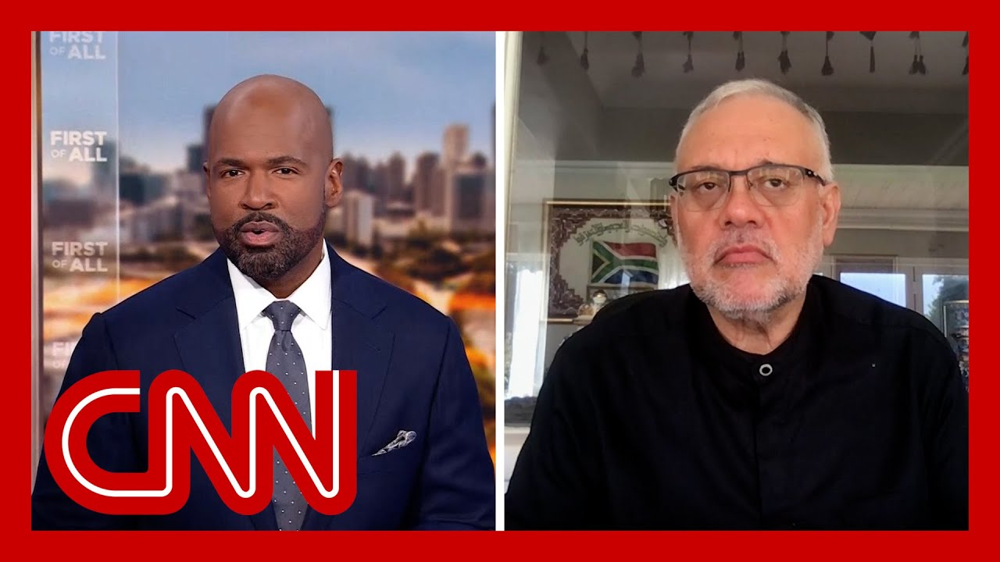

【被驱逐大使回应特朗普的"白人种族灭绝"言论】
Summary: South African President Cyril Ramaphosa maintained dignity during a contentious Oval Office meeting with Trump, who used the encounter to promote false claims about white persecution in South Africa, exacerbating existing tensions between the two nations.
摘要： 南非总统西里尔·拉马福萨在与特朗普的激烈椭圆形办公室会晤中保持了尊严，特朗普利用这次会面宣扬关于南非白人受迫害的错误说法，加剧了两国之间已有的紧张关系。

⏱️ Estimated Reading Time: 12 min
South African President Cyril Ramaphosa is being praised for how he handled himself during President Trump's Oval Office meeting.
南非总统西里尔·拉马福萨因在特朗普总统椭圆形办公室会晤中的表现而受到赞扬。
Ramaphosa and his delegation visited the White House on Wednesday, hoping to stick to the topic of trade agreements.
拉马福萨及其代表团周三访问了白宫，希望坚持讨论贸易协定的话题。
Instead, President Trump continued his practice of using the Oval Office news conferences as opportunities to try to intimidate or embarrass, rather than welcome show diplomacy.
相反，特朗普总统继续将椭圆形办公室新闻发布会作为试图恐吓或羞辱的机会，而不是展示外交礼仪。
Trump brought out visual aids meant to back up his false claims that white South Africans are Afrikaners, the farmers, they are being persecuted.
特朗普拿出视觉辅助材料，旨在支持他关于南非白人是阿非利卡人、农民并正在遭受迫害的错误说法。
Ramaphosa, chief negotiator of the end of apartheid, kept his cool.
作为结束种族隔离的首席谈判代表，拉马福萨保持了冷静。
Tensions between the two countries were high long before Ramaphosa arrived in Washington.
在拉马福萨抵达华盛顿之前，两国之间的紧张关系就已经很严重。
In February, Trump issued an executive order freezing aid to South Africa over some of the same claims that he brought up.
今年二月，特朗普发布了一项行政命令，冻结对南非的援助，理由与他提出的相同说法有关。
This week. In March, Secretary of State Marco Rubio declared South Africa's ambassador to the US, Ebrahim Rasool, persona non grata and expelled him.
本周。三月份，国务卿马可·卢比奥宣布南非驻美国大使易卜拉欣·拉苏尔为不受欢迎人物并将其驱逐。
Well, Ambassador Ebrahim Rasool joins me now from Cape Town.
现在，易卜拉欣·拉苏尔大使从开普敦加入我们的节目。
Mr. Ambassador, thank you for being with me.
大使先生，感谢您参加我们的节目。
I want to talk a little bit about this meeting in the Oval Office and then look ahead at the relationship between the US and South Africa.
我想先谈谈这次椭圆形办公室会晤，然后再展望美国和南非之间的关系。
First, President Ramaphosa said that it was not dramatic, but there are plenty of people who characterize it as an ambush of your president.
首先，拉马福萨总统表示这次会晤并不戏剧性，但很多人将其描述为对您总统的伏击。
What's your view of what happened at the Oval Office?
您对椭圆形办公室发生的事情有何看法？
No, thank you very much.
不，非常感谢。
I think that the idea of an ambush is fairly accurate, in the sense that you don't expect a president.
我认为伏击这个说法相当准确，因为你不会期待一位总统。
You don't expect diplomacy from a superpower to descend into such a haranguing, hectoring, blustering, engagement and so in that regard, when you come there with a decent, demeanor, you don't expect it.
你不会期待一个超级大国的外交会沦为如此咆哮、威吓、虚张声势的对抗，因此在这方面，当你以体面的举止前往时，你不会期待这种情况。
But I do think that I agree with those who say that the South African delegation led by President Ramaphosa was united, was focused.
但我确实同意那些认为由拉马福萨总统率领的南非代表团团结一致、专注的说法。
It was diverse, of covering all opinions matters most importantly dignified.
代表团具有多样性，涵盖了所有观点，最重要的是保持了尊严。
And certainly the body language spoke as to who was the adult in the room and who was not.
当然，肢体语言清楚地表明了谁是房间里成熟的一方，谁不是。
Hmmm. I want to play for you a claim that the administration, uses to defend, its assertion that there is a genocide, and there's persecution of white South Africans.
嗯。我想为您播放政府用来支持其关于存在种族灭绝和南非白人受迫害说法的一个主张。
let's play that.
让我们播放一下。
This is from, Elon Musk and also from, the, a representative of the Department of Homeland Security.
这是来自埃隆·马斯克以及国土安全部一位代表的说法。
There are now 140 laws.
现在有140项法律。
In South Africa that give, that basically, give strong preference to, to if you're, if you're a black South African and not otherwise.
在南非，这些法律基本上给予黑人南非人强烈优待，而非其他人。
There's been over 140 laws enacted that are race based and to discriminate against racial minorities.
已经颁布了超过140项基于种族的法律，歧视少数族裔。
Now, this claim, appears to originate with the South African Institute for Race Relations, which has had some, race related controversies of their own over the last couple of years.
现在，这一说法似乎源自南非种族关系研究所，该机构在过去几年中自身也涉及一些与种族相关的争议。
But how do you defend against that claim that there are laws, 140 of them, that discriminate against white South African?
但您如何反驳关于存在140项歧视南非白人法律的说法？
if you consider the entire law book of apartheid, then amending 140 them is tinkering with what apartheid meant for black people.
如果你考虑整个种族隔离时期的法典，那么修改其中的140项法律只是对种族隔离对黑人意义的修修补补。
If one of the laws says give blacks more jobs, if one of the laws says give blacks more opportunities in the economy, give them more ownership, give them more land, then those are 140 very few laws that try to overturn apartheid while keeping the edifice of reconciliation going without former oppressors and supremacists in the white community.
如果其中一项法律规定给予黑人更多工作机会，如果一项法律规定给予黑人在经济中更多机会，给予他们更多所有权，给予他们更多土地，那么这140项法律只是试图推翻种族隔离同时保持和解大厦继续前进的很少法律，而不需要白人社区中前压迫者和至上主义者的参与。
And so what they hold up as transformation laws of apartheid is, in fact, an indictment that we may have moved too little, too slowly in overturning the legacy of apartheid.
因此，他们所谓的种族隔离转型法律实际上是对我们在推翻种族隔离遗产方面可能做得太少、太慢的控诉。
And so when Elon Musk says that, he cannot get a Starlink contract in South Africa, although, since the meeting, there have been, there's progress to make exceptions for him to do that.
因此，当埃隆·马斯克说他无法在南非获得星链合同时，尽管会晤后已有进展为他做出例外。
And he says it's absurd that he, as a man born in South Africa, cannot get that.
他说他作为在南非出生的人无法获得这个合同是荒谬的。
What's your response to him?
您对他的回应是什么？
Who says that that is discriminatory?
谁说这是歧视性的？
What is different, for example, to what Mr. Trump says?
这与特朗普先生所说的有什么不同？
Then he says Arabs can come into the United States with their investments, but they will be required to make a partnership with American companies so that they pull together.
然后他说阿拉伯人可以带着他们的投资进入美国，但他们需要与美国公司建立合作伙伴关系以便共同合作。
what we are actually seeing is, a very conventional approach by countries who want to be part of the growth of a company, and therefore I think there are 600 American companies, and the experience is one of booming in South Africa, a thriving in South Africa and of making enormous progress and profits in South Africa.
我们实际看到的是，希望参与公司增长的国家采取的一种非常常规的做法，因此我认为有600家美国公司在南非蓬勃发展，在南非取得巨大进步和利润的经验。
And so I really think judging by the 600 American companies who are thriving versus one who is complaining simply because he's been asked to share ownership of his project with black South Africans, which is no different to what Mr. Trump is saying to foreign investors who come in and who are asked to put up joint plants and manufacturing plants with Americans.
因此，我确实认为，根据600家蓬勃发展的美国公司与一家仅仅因为被要求与南非黑人分享项目所有权而抱怨的公司相比，这与特朗普先生对外国投资者所说的要与美国人建立联合工厂和制造工厂没有什么不同。
You talked about the need for South Africa to rebuild its relationship, repair its relationship with the United States without abandoning its, values.
您谈到了南非需要在不放弃其价值观的情况下重建、修复与美国的关系。
and after your expulsion, President Ramaphosa named a special envoy to the United States to rebuild that relationship.
在您被驱逐后，拉马福萨总统任命了一名美国特使来重建这一关系。
his name is, Mcebisi Jonas.
他的名字是姆塞比西·乔纳斯。
I want to play for everyone.
我想为大家播放。
Something that Mr. Jonas said this was during a lecture.
乔纳斯先生在一次演讲中说的话。
November of 2020.
2020年11月。
This is the man that President Ramaphosa has highlighted to rebuild the relationship with the United States.
这就是拉马福萨总统强调要重建与美国关系的人。
Right now, the US is undergoing a watershed moment with Biden.
目前，美国正与拜登经历一个分水岭时刻。
The certain winner in the presidential race is the racist, homophobic homophobe Donald Trump.
总统竞选中确定的赢家是种族主义、恐同的唐纳德·特朗普。
How we got to a situation where a narcissistic right wing took charge of the world's greatest economic and military powerhouse is something that we need to ponder over.
我们如何走到一个自恋的右翼掌管世界最大经济和军事强国的情况，这是我们需要深思的问题。
I mean, if you consider why you were expelled from the U.S and this is the man who's supposed to repair the relationship.
我的意思是，如果你考虑为什么你被美国驱逐，而这个人应该是修复关系的人。
Racist, homophobe.
种族主义者，恐同者。
Narcissistic right winger.
自恋的右翼分子。
How is he the right person to rebuild?
他怎么会是重建关系的合适人选？
You are not going to get a black South African who suffered under apartheid, went to prison like the two of us, was persecuted and hounded into the underground.
你不会找到一个在种族隔离下受苦、像我们两人一样入狱、被迫害并被迫转入地下的南非黑人。
Denying the evidence of the eyes.
否认眼前的证据。
When we look at the United States today and I called it the premier system, he called it all those kind of names.
当我们看今天的美国时，我称其为顶级制度，他却用各种贬义词称呼它。
But the fact is that when a piece of good as a hinge, it begins to look like a door.
但事实是，当一块好的铰链开始看起来像一扇门时。
When it has a handle, it begins to smell like a door.
当它有了把手，它开始闻起来像一扇门。
And when it opens and closes, it is a door.
当它能开关时，它就是门。
And so I think it is a moment in which the latest victims globally of white supremacism and apartheid, when we recognize those kind of signs, we respond with the DNA of having been the last victims of supremacism in South Africa.
因此，我认为这是一个时刻，全球白人至上主义和种族隔离的最新受害者，当我们认识到这些迹象时，我们以作为南非至上主义最后受害者的DNA作出回应。
And so I think we've got to get past that.
因此，我认为我们必须超越这一点。
We've got to be able to say that he has a business brain extraordinaire.
我们必须能够说他有一个非凡的商业头脑。
He's able to keep his eye on the trade relations.
他能够关注贸易关系。
He's been a successful person.
他一直是个成功人士。
He knows finances.
他懂财务。
And I think that that is what is going to be required.
我认为这正是所需要的。
And I'm hoping that with Mr. Trump having had my blood, that they will be able now to get on as I think they did, in the Wednesday meeting, despite the bluster and the theater of the Oval Office, I think good talks were ahead.
我希望，随着特朗普先生已经发泄了对我的不满，他们现在能够像我认为他们在周三会晤中那样继续前进，尽管有椭圆形办公室的虚张声势和戏剧性，我认为好的会谈就在前方。
the basis of trade, even on Starlink.
贸易的基础，甚至在星链上。
And I think that that's the foundation from which to repair Former South African ambassador to the United States, Ebrahim Rasool.
我认为这是修复关系的基础。前南非驻美国大使易卜拉欣·拉苏尔。
Thank you.
谢谢。